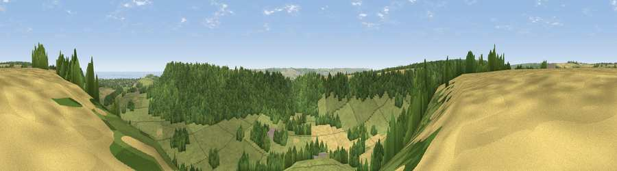

Viewpoint near Hackness
#16824 in England · top 36% of its area beats it · near HacknessThe view, rendered

A 360° render of this exact spot computed from the terrain model, tree cover and land cover — summer colours, afternoon light, calibrated against photographs of famous viewpoints. Real trees, hedges and buildings will differ in detail.
The panorama
Grey silhouette: terrain skyline in each direction (720 bearings, Earth curvature and refraction included). Dashed green: skyline with trees (+15 m) and buildings (+8 m) as obstacles. Blue strip: how far the ground is visible on each bearing.
Where the view opens
Wedge length = distance to the farthest visible ground on that bearing (vegetation-aware). Rings at 10, 25 and 50 km.
What fills the view
54% grassland · 33% woodland · 11% cropland · 1% water
Angular shares of the visible panorama (visual magnitude), not map area. Landscape diversity 0.44 (0–1 Shannon).
Key numbers
More beautiful places nearby
The staircase of upgrades: each row has a higher view potential than everything closer. Driving times are estimates from straight-line distance, calibrated against real road routing — check an actual route before setting out.
| Place | Direction | Drive | Score |
|---|---|---|---|
| Viewpoint near Hackness | NE · 1 km | ~3 min | 57.6 |
| Viewpoint near Scalby | NE · 2 km | ~5 min | 73.4 |
| Seamer Beacon | ESE · 3 km | ~7 min | 76.9 |
| Viewpoint near Burniston | NNE · 3 km | ~8 min | 78.3 |
| Olivers Mount | ESE · 6 km | ~13 min | 80.3 |
| Viewpoint near Ravenscar | N · 12 km | ~23 min | 82.7 |
| Viewpoint near Ravenscar | N · 13 km | ~23 min | 87.3 |
| Viewpoint near Ravenscar | N · 13 km | ~24 min | 90.0 |
54.28610, -0.49418 · source: screening · position refined by local search. Computed location — check access rights before visiting.